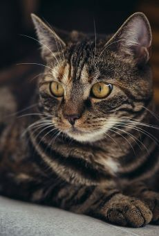
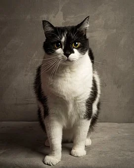
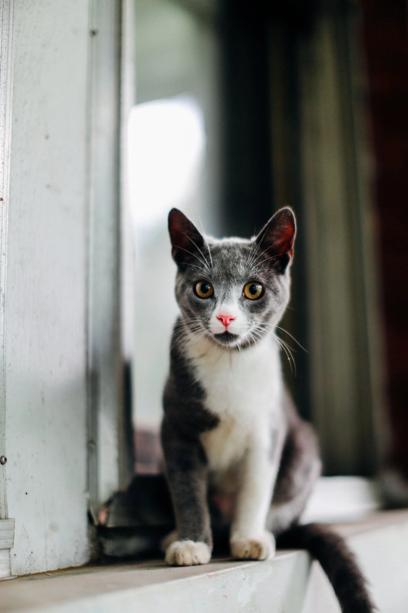
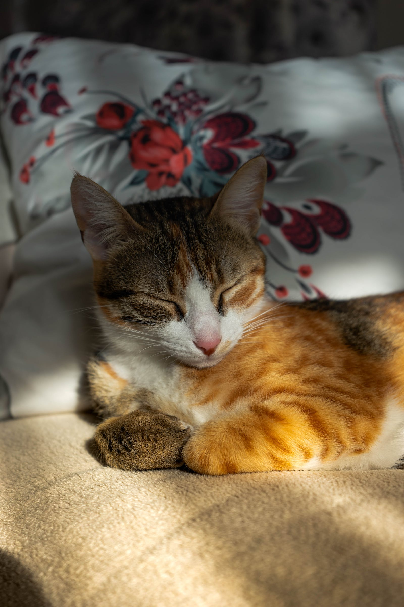

-
Tigrinho
Dócil e independente, ama brincar com sacolas e caixas, e nunca nega um carinho.
Disponível para adoção
-
Paçoca

Amoroso e dorminhoco, nunca nega uma opotunidade de tirar um bom cochilo.
Disponível para adoção
-
Frajola
Vaidoso e obeservador, tem grande atenção aos detalhes.
Disponível para adoção
-
Jupter

Tranquilo e anti-social, odeia muitas pessoas ao redor dele.
Indisponível para adoção
-
Juliana
Caçadora e ágil, sempre atrás de uma "presa", tome cuidado.
Disponível para adoção
-
Pudim
Carinhoso e sensível, não gosta de ficar muito tempo sozinho.
Disponível para adoção